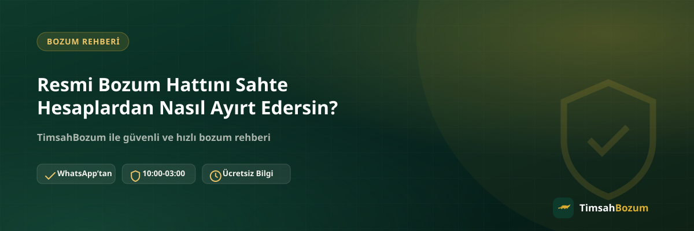

Bozum hizmetleri popülerleştikçe, gerçek hattın adını veya profil görselini kopyalayan sahte hesaplar da ortaya çıkabiliyor. Kod veya bakiye bilgini paylaşmadan önce karşındaki hesabın gerçekten resmi TimsahBozum hattı olduğundan emin olmak, işlemin güvenliği açısından atlanmaması gereken bir adım. Bu yazıda resmi hattı sahte hesaplardan ayırt etmenin pratik yollarını anlatıyoruz.
Sahte Hesaplar Neden Ortaya Çıkar?
Bir marka tanındıkça, o markanın adını kullanarak güven kazanmaya çalışan sahte profiller de artar. Bu hesaplar genelde gerçek hattın profil fotoğrafını, ismini veya yazışma üslubunu taklit ederek kullanıcıyı yanıltmaya çalışır. Amaç, kullanıcının kod veya bakiye bilgisini gerçek hat sanarak paylaşmasını sağlamaktır. Bu yüzden hangi hesaba yazdığını doğrulamak, işlemin ilk ve en önemli adımıdır.
TimsahBozum'un Resmi İletişim Kanalları Hangileri?
Bozum işlemlerimiz yalnızca tek bir resmi WhatsApp numarası üzerinden yürür: +90 543 887 21 71. İster mobil ödeme bakiyeni ister bir Razer Gold kodunu bozduruyor ol, süreç aynı numaradan işler. Bunun dışında bir resmi WhatsApp kanalımız ve Google işletme profilimiz de mevcut, ancak işlem bu ikisi üzerinden başlatılmaz, yalnızca bilgi ve teyit amacıyla kullanılabilir. Sitede yer alan numara dışındaki hiçbir hat, hesap veya kanal bizim adımıza işlem yürütmez.
Sahte Bir Hesabı Hangi İşaretlerden Anlarsın?
Sana ilk mesajı gönderen taraf sahte hattır çoğu zaman; gerçek süreçte ilk mesajı sen atarsın. Ayrıca sahte hesaplar genelde aceleci bir üslup kullanır, "hemen şimdi bilgini gönder, fırsat kaçacak" gibi baskı yaratan ifadelere başvurur. Sitede yayınlanandan farklı, olağandışı yüksek bir oran vaat etmesi de bir başka uyarı işaretidir. Bu tür işaretlerden biriyle karşılaşırsan bilgi paylaşmadan önce durup numarayı kontrol etmen gerekir.
Numarayı Doğrulamanın En Hızlı Yolu Nedir?
Karşına çıkan numarayı, sitede veya iletişim sayfamızda yayınlanan +90 543 887 21 71 numarasıyla karşılaştır. Farklı bir numaradan mesaj aldıysan, o numaraya doğrudan bilgi vermeden önce resmi hattımızdan "bu numaradan bize yazan biri var, sizin miydi" diye teyit isteyebilirsin. Bu tek adım, sahte bir hesaba bilgi vermeni büyük ölçüde engeller.
Sahte Hesap SMS Doğrulama Kodu İsterse Ne Olur?
Resmi bozum sürecinde senden hiçbir zaman SMS doğrulama kodu istenmez. Bu kod, hattına veya hesabına erişim vermek anlamına gelir ve bozum işlemiyle hiçbir ilgisi yoktur. Böyle bir talep gelirse bu, karşındaki hesabın sahte olduğunun en net göstergelerinden biridir; işlemi durdur ve bilgi paylaşma.
Yanlışlıkla Sahte Bir Hesaba Bilgi Paylaşırsan Ne Yapmalısın?
Kod veya bakiye bilgini yanlışlıkla sahte bir hesapla paylaştıysan hızlı davranman önemli. Mümkünse kodu kendin kullan ya da bakiyeni koruyacak bir adım at, ardından durumu resmi hattımıza bildir. Ne kadar erken fark edersen, olası bir kötüye kullanım riskini o kadar azaltırsın. Bu yüzden şüphelendiğin an, "belki gerçektir" diye beklemeden doğrulama yapmak en güvenli yaklaşım.
Google Yorumları ve WhatsApp Kanalı Doğrulamada Nasıl Yardımcı Olur?
Resmi Google işletme profilimizdeki yorumlar ve WhatsApp kanalımız, hattın gerçekten uzun süredir aktif ve tanınan bir hizmet olduğuna dair ek bir gösterge sunar. Sahte hesapların böyle bir geçmişi veya kanıtı olmaz, genelde yeni açılmış ve sınırlı bir yazışma geçmişine sahiptirler. Şüphe duyduğun bir durumda bu kanallara göz atmak, kararını netleştirmene yardımcı olabilir.
Arama Motorunda Karşına Çıkan Bir Reklam Güvenilir mi?
Arama motorlarında "bozum" veya belirli bir hizmet adıyla arama yaptığında, gerçek siteyi taklit eden reklamlar veya sahte web sayfalarıyla karşılaşman mümkün. Bu tür sayfalar genelde bağlantı adresi (URL) üzerinden fark edilir; adres timsahbozum.com dışında bir alan adına gidiyorsa, o sayfa üzerinden hiçbir bilgi paylaşma. En güvenli yöntem, siteye doğrudan adres çubuğuna yazarak veya kaydettiğin bir kısayoldan ulaşmak, arama sonuçlarındaki bağlantılara körü körüne güvenmemektir.
Resmi Numarayı Kayıtlı Tutmak Ne İşe Yarar?
+90 543 887 21 71 numarasını telefon rehberine kaydetmen, ileride bir mesaj aldığında bunun resmi hat olup olmadığını tek bakışta anlamanı sağlar. Kayıtlı olmayan bir numaradan "yeni hattımız bu" ya da "sistem güncellendi, buradan devam edin" gibi bir mesaj gelirse, bu değişikliği önce eski ve bilinen numaradan teyit etmeden asla kabul etme. Marka adını değiştirmeden numara değişikliği yapılması durumunda dahi, açıklama her zaman mevcut resmi kanaldan gelir; aniden ortaya çıkan yeni bir numara tek başına yeterli bir kanıt değildir.
Bilgini Paylaşmadan Önce Son Kontrol
Kod veya bakiye bilgini paylaşmadan önce şu üç soruyu kendine sor: Bu numara sitede yayınlanan numarayla aynı mı? İlk mesajı ben mi attım, yoksa karşı taraf mı bana ulaştı? Benden SMS doğrulama kodu ya da hesap şifresi isteniyor mu? Bu sorulardan herhangi birine "hayır" ya da "şüpheliyim" diye cevap veriyorsan, bilgi paylaşmadan önce resmi hattımızdan teyit almanı öneririz.
Şüphen varsa ya da doğrudan işlemine başlamak istiyorsan, resmi WhatsApp hattımızdan yazarak numarayı ve süreci teyit edebilirsin.
İlgili Yazılar
- Bozum Yaparken WhatsApp Dışında Bir Platform Güvenilir mi?
- Bozum Yaparken SMS Doğrulama Kodu İsteyen Kişilere Dikkat
- Bozum İşleminde Hesabıma Erişim Veriyor muyum?